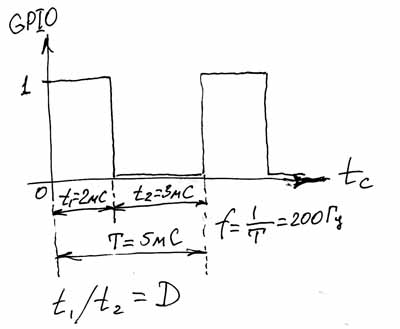

Ранее мы научились с помощью изменения состояния порта GPIO управлять светодиодом. Мы научились управлять длительностью и частотой импульсов, благодаря чему получили различные световые эффекты. Убедились в том, что если изменять состояние порта со звуковой частотой, то можно получать различные звуки, освоили частотную модуляцию…
А что получится, если мы будем изменять уровень порта со звуковой частотой, но вместо динамика подключим нашего старого подопытного друга- светодиод?
Проведите эксперимент. Измените нашу программу blink.c так, чтобы светодиод загорался и гас 200 раз в секунду, с частотой 200 Гц. Для этого достаточно изменить параметры функции delay(). Чтобы узнать, какие задержки нужно ввести, достаточно рассчитать период колебания Т. Т=1/f. А т.к. f у нас равна 200Гц, то Т=1/200=0,005 секунды, или 5 миллисекунд. Вот за эти 5 миллисекунд мы должны успеть включить светодиод и выключить его 1 раз. Так, как 5 на 2 не делится нацело, примем время свечения светодиода в 2 мС, а время несвечения в 3мС. 2+3=5, т.е. полный период одного колебания так и останется 5мС. Теперь изменим программу: заменим delay(500), на delay(2) и delay(3) для горящего и не горящего светодиода соответственно.
Скомпилируем программу и запустим. Если у вас всё ещё в схеме установлен динамик, то вы услышите низкий звук, а если динамик заменить светодиодом, то вы увидите непрерывно горящий светодиод. На самом деле светодиод конечно моргает, но делает он это на столько быстро, что глаз уже не замечает это моргание и воспринимает его как непрерывное свечение. Но светит диод вроде бы не так ярко, как он у нас горел раньше. Можете для сравнения запустить нашу самую первую программу, где светодиод горел постоянно, и сравнить яркость светодиода в обоих случаях. Давайте разберёмся, почему так происходит и как это можно использовать.
Помните, в самой первой части мы рассчитывали токоограничивающий резистор для питания светодиода? Мы знаем, что у светодиода есть рабочий ток, при котором он светится наиболее ярко. Если этот ток уменьшать, то яркость светодиода будет тоже уменьшаться. А когда мы начинаем быстро включать и выключать светодиод, то его яркость свечения становится зависимой от среднего тока (Iср) за период колебания. Для импульсного (П-образного) сигнала, который мы генерируем на выходе порта GPIO, средний ток будет пропорционален отношению t1 к t2. А именно: Iср=Iн x t1/t2, где Iн- номинальный ток светодиода, который мы благодаря резистору установили в 10мА. При номинальном токе светодиод светится наиболее ярко. А в нашем случае Iср=10 х 2/3 = 6,7мА. Мы видим, что ток стал меньше, поэтому и светодиод стал гореть менее ярко. В этой формуле отношение t1/t2 называется коэффициентом заполнения импульса D. Чем этот коэффициент больше, тем больше будет среднее значение тока. Мы можем изменять этот коэффициент от 0 до 1, или от 0% до 100%. А значит, мы можем и менять средний ток в этих пределах. Получается, что таким способом мы можем регулировать яркость светодиода от максимальной, до полностью выключенного! И хотя напряжение на выводе нашего порта по-прежнему может быть лишь либо +3,3в, либо 0в, ток в нашей схеме может изменяться. И изменением этого тока мы легко можем управлять нашей Малинкой. Вот такой способ управления и называется Широтно-Импульсной модуляцией, или просто ШИМ. В английском языке это звучит как PWM, или Pulse-Width Modulation:

ШИМ, это импульсный сигнал постоянной частоты с переменным коэффициентом заполнения. Используется и такое определение, как Импульсный сигнал постоянной частоты с переменной скважностью. Скважность S, это величина обратная коэффициенту заполнения и характеризует отношение периода импульса T к его длительности t1. S=T/t1 = 1/D.
Ну а нам, для закрепления наших знаний, остаётся написать программку, которая будет плавно зажигать и гасить наш светодиод. Процесс изменения яркости свечения называется диммированием.
У меня получилось вот так:
// Программа плавно изменяет яркость светодиода
// Светодиод подключён к порту Р1_03
#include <bcm2835.h>
#define PIN RPI_GPIO_P1_03
int main()
{
if (!bcm2835_init())
return 1;
bcm2835_gpio_fsel(PIN, BCM2835_GPIO_FSEL_OUTP); //Устанавливаем порт Р1_03 на вывод
unsigned int t_on, t_off; // t_on продолжительность включённого состояния= t1, а t_off- выключенного =t2
int d = 100, i, j, flag=0; // d- коэффициент заполнения в процентах, i и j, вспомогательные переменные для организации циклов, flag- если =0 светодиод затухает, если =1 разгорается
int a=10; // количество полных рабочих циклов
while (a)
{
for (j=100; j!=0; j--) // изменяем коэффициент заполнения от 100% до 0%
{
t_on=50*d; //находим t1
t_off=50*(100-d); //находим t2
if (flag==0) d=d-1; // если светодиод затухает, уменьшаем коэффициент заполнения
if (flag==1) d=d+1; // если светодиод разгорается, увеличиваем коэффициент заполнения
for (i=10; i!=0; i--) // передаём 10 импульсов на светодиод с рассчитанными параметрами t1 и t2
{
bcm2835_gpio_write(PIN, LOW);
delayMicroseconds(t_on);
bcm2835_gpio_write(PIN, HIGH);
delayMicroseconds(t_off);
}
if (d==0) flag=1; // если светодиод выключен, начинаем его включать
if (d==100) flag=0; // если светодиод достиг максимума свечения, начинаем его гасить
}
a--;
}
return (!bcm2835_close ()); // Выход из программы
}
Сохраняем программу под именем dimmer.c, компилируем и запускаем.
Как видите, теперь наш светодиод медленно гаснет и медленно разгорается. Вот так и работает ШИМ. Широтно-импульсная модуляция используется во многих областях. Это и управление яркостью свечения ламп и светодиодов, управление сервоприводами, регулирование напряжения в импульсных источниках питания (которые например, стоят в вашем компьютере), в цифро-аналоговых и аналого-цифровых преобразователях и т.д. К стати, если вернуться к нашей схеме с динамиком, то при помощи ШИМ можно управлять громкостью сигнала, а изменяя частоту- его тоном.
Помните старый анекдот из предисловия к этой части, о киномеханике, медленно вытягивающим вилку из розетки? Теперь то мы знаем, что этому киномеханику, чтобы плавно погасить свет, нужно наоборот очень быстро вставлять и вытаскивать вилку из розетки.
На этом мы и закончим данный урок. Остаётся лишь добавить, что ШИМ настолько часто используется в различных приложениях, что производители процессорного оборудования часто встраивают ШИМ-контроллер непосредственно в процессор. Т.е. вы процессору задаёте параметры требуемого вам сигнала, а процессор уже сам, без вашей помощи выдаёт нужный вам сигнал. При этом, нисколько не тратя программных ресурсов на генерацию этого сигнала. Bcm2835 тоже имеет встроенный аппаратный ШИМ. И этот ШИМ является альтернативной функцией порта GPIO 18, или P1-12. Чтобы воспользоваться аппаратными ШИМ мы должны установить порт P1-12 в режим ALT5 и задать процессору параметры. Но это уже совсем другая история…